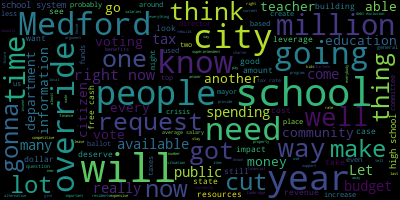

[Petrella]: Hello, everyone, and welcome to your show, MedFed Happenings. I am John Petrella. Today's show features Roy Belson and Danielle Marcelino, who will be addressing truth, facts, and information about the upcoming override questions in MedFed, which are questions six, seven, and eight. Tonight we have video presentations by Roy and Danielle from an all-Medford meeting that I attended. This was recorded and produced by Joe DiMaio at Joe DiMaio Creative, and I want to thank you, Joe, for helping us out with those. Roy Belson is a professional with decades of experience as the superintendent of the Medford public school system. He is highly regarded at the Statehouse, providing guidance for educational strategy and programs. Roy explains the current state and solutions for Medford and our children. He does not support the educational ballot overrides. Danielle Marcellino is the Medford Firefighters Union Secretary and a firefighter. She is speaking for the Medford Firemen's Union. Danielle explains the lack of engagement with the firefighters organization in the design and needs for a new fire headquarters. She is going to put Medford citizens first and is taking a position to not support the debt exclusion. We'll show you Roy's presentation first. Followed by Danielle's and let's get right to the videos Tonight
[Scarpelli]: We have to thank my team, there's so many of them, but I want to thank everybody that's here. If you're from All-Method, if you could just raise your hand. Just thanking you for being here tonight and helping. Thank you so much. We've had a few events. I know tonight's a tough, tough night. I know that we had about three different events tonight, but we said we need to do something because things are happening really quick. And the reason that we're here is because we wanted to talk about the Proposition 2.5 override and the debt exclusion. So there are three questions that will be on the ballot. I'll give you some more information later on after a few people speak. But one is the debt exclusion, which is for a new fire headquarters. I'm very fortunate that we have one of our union leaders from the fire department. Danielle Masolino is going to be here. She's going to speak in a little while. And proud to say someone that I called and asked his opinion because I think he is probably the the smartest educational mind, at least in Massachusetts. He's someone that I respect. And sad to say, I don't think people respect him enough until that person's gone. But I called this gentleman and I asked him some questions. And within five minutes, you just feel better because he just educates you with his knowledge. And I asked him if he can come out and spend a Friday night to come out and speak and give his opinion and what, you know, his perspective as an educational leader, someone that ran our school system for many, many years, still works at the state level, high level at the state, and he's gonna share some of his knowledge, and then we'll fill in some gaps that people had that had some questions, and we can help educate everybody so they understand what this means on November 7th. So right now, I'd like to introduce my friend Roy Belson.
[Belson]: Nice to see everybody. Thank you for giving me an opportunity to say a few things. And hopefully, what I express will help you understand what's going on. Obviously, I'm here to share my perspectives and my thoughts about the upcoming questions on the November ballot, especially those that affect public education. So while I'm no longer the superintendent of schools, I'm in my seventh year of retirement or semi-retirement, I still stay very aware of education items, both in the community, the state, nation, and it's very enlightening to see what people are doing around the commonwealth. I spent 50 years in Medford public education, 23 years as superintendent, And I also served at different times as the budget director, the curriculum director, and the personnel administrator, as well as a teacher. So I care deeply about what happens in our schools and our community. I'm not here tonight to criticize the school administration. I know how hard they work. I know the challenges that they face. And I know that some of the things are beyond their control. I have always believed, and I still do, that schools deserve solid levels of funding and that the budget process must promote and support quality programming, stability, and predictability. Budget development must be resourceful and creative. It should not be a destabilizing force, exercise, and create uncertainty and conflict. And I think that's what's happened in the last couple of years. Yes, there will be from time to time differences among officials, educators, constituents, but at all times, they should be based on the facts, on available resources, best practices, and the needs of students and their families, as well as the community at large. The current override ballot questions, initiatives, and two of them in education, and one, a debt exclusion for the fire department, Call for, if you will, in the school department, a $7 million hike. You had a half a million dollars for the DPW at 7.5. This is a property tax levy. This request is based upon the argument that the school system has been perpetually in a structural deficit, and it's not true. The pertinent questions are these. Is it true that we're in a deficit? How does Medford compare with other communities around us? Are there good alternatives available to meet our needs? Is this a one-time request or will there be another one, a larger request in the near future? And I think you know the answer to that. What is the real impact on the Medford taxpayer? And does the voting public truly understand the pros and cons? And has there been sufficient information and time for the public to make an informed decision? So let's take a look and let's consider the following. The last two years relied heavily on the use of federal ARPA and ESSER funds. They were put out there because of the COVID crisis. It was well known that when these funds were used up, there would be a need for the city to sustain staff and programs with local and state revenues. Otherwise, there would be undesirable cuts to program and personnel. So was this necessary? When the budget process took place in the last year, everybody knew that those funds had to be replaced. And those funds enabled the city to build up a free cash reserve that is three times what has ever been in place. Almost at this point in time, $35 million. And if that was the case, was it necessary? And did the mayor really fail to provide full funding consistent with the school committee's request? when there's a significant amount of free cash available to the city, much higher than the amount available in previous years. The school administration, by law, is required to ask, and the school committee as well, for an amount sufficient to support the schools under Proposition 2 1⁄2. It's their legal request to do that. The mayor or the city manager in the past, when 2 1⁄2 passed, had the bottom line, and the city council can only approve or cut what the mayor provides. So it's not simple. The amount of money reported to DOR of free cash was $25 million in 2004. And as I indicated, they added another $9 million or thereabouts in the current fiscal year. Why, given the often repeated mantra of the mayor, transparency. Interesting word. And the city's financial director, did they fail to provide a clean and complete report on the city's financial position to the city council and the school committee? I think the answer's simple. The answer is that they wanted to leverage a crisis to create a need for an override, because you're in a situation where you don't have it, you're threatening cuts to important services, and if you don't give me the money, we're gonna have to do drastic measures. This is not Proposition 2 1⁄2. In 1981, 1982, I was in the school system. I was working with the superintendent's office, and the budget of the city of Medford for the schools was $19.4 million. That year, we had to cut $3.2 million. That's a cut. 150 people got laid off. That was difficult, very difficult. We are not in that situation right now. We are not in that situation. When the 2024 DOR, Department of Revenue Tax Recap Report is studied, and I did that, There are clear underestimates of revenue amounts when compared with 2023, specifically by almost 15%. So in other words saying, if investment income was X, it was 14% less when they were projecting their revenue, almost $18 million. Why create a crisis? Before you ask the public for an override, should you not first use the obvious resources available? You can always go back later on and say, you know, we used up our resources. But when you have them, why won't you use them? Let's talk about the tax rate. The Medford tax rate is low. The residential tax rate is low comparatively to area communities. Nothing wrong with that. I don't think anyone feels like it has to be number one, the highest tax rate in the Commonwealth. So it's not a bad thing when affordability for housing and other needs is challenging. If the overrides and debt exclusion pass, taxes will increase, I think, by at least 10%. especially when you include the 2.5% statutory increase that happens virtually every year. And what about the impact of re-evaluation? You know what's going on right now. They're checking your houses out. And by the way, if you haven't noticed, your house is worth more than it was when you bought it, in most cases. And when they reassess it, they're going to reassess it and the taxes are going to go up. And on top of that, you're probably going to pay a little bit more for water and sewer. And when you add it all together, if you have to take an equity loan, you're gonna pay a hell of a lot more interest than you might like. And if you're a new person wanting to buy a home, the mortgage rates are still at 6.2%, and even if it goes down to 5%, it's a hell of a lot higher than it was when people refinanced a few years ago. And what about renters? Some of these people will never have a chance. They just won't be able to to get in and the landlords are going to pass on the rent to their tenants. So, that affects people too. When you think about it, there's also a deduction, tax deduction limit. You used to be able to take your income tax and your house property tax and interest. You can't do that anymore in the current rule. So, you can't even deduct some of the stuff that you used to be able to do before. Some people can get around it for various reasons, Not everybody. If you look at the age factor in the community, 22% of Medford residents are over the age of 60. 14% are 70 or more. A lot of these people are on fixed incomes. They don't have another alternative to go to. And they're probably supporting their children, their grandchildren, and everything else like that as well. So a hit like this is really significant. By the way, as the high school project moves forward, and it's in a planning stage right now, undoubtedly there will be another override request, which isn't out there right now. That'll make three override requests. The two that are there now, and the one that might come up, plus the debt exclusion, in the very near future. Given the cost of a rebuild, or renovation, this will be the biggest number that you've ever seen. The SBA reimbursement rate is not known at this time. It will only cover certain costs. Not everything is eligible. If you look at high schools that have been built or renovated in recent times, you're talking somewhere in the vicinity of $200 million to $400 million to redo the high school. We've got vocational shops and other things like that that have to be preserved. That's an expensive thing. And if you maybe get 35, 40%, not getting the 90% that we got for the schools, the K through 12 schools that we got several years ago with Rick as the chairperson of the building committee at that time. And we, by the way, sold the old schools so that we actually made money. Don't tell anybody. You don't get that now. So you're gonna be talking about potentially 100 to $200 million of local assessment over and above. That will impact taxes on top of the early override assessments. And by the way, if the override passes in November, you will see the increase on your January 2025 tax bill. You're not gonna wait a year to build it up. You're gonna see it in January. It's only a few months away. Now one of the arguments that comes around is that somehow Medford salaries and cost per pupil are not competitive. Now as a educator, I think I started off with this, I want every nickel I can get for the schools. I mean, I'd be less than honest if I didn't tell you that I think the schools deserve every nickel we can give them, and we have plenty of needs. But no one gets everything they want, and no school system is able to do that, and no community is able to do that. Well, let's take a look at the Medford Public Schools financials. And this is according to the latest Department of Elementary and Secondary Education statistics. The state average per pupil is $19,714. Medford is currently spending $21,372. Arlington is spending $18,615. Malden is spending $17,428. Melrose is spending $15,540. Peabody is spending $16,996, and I can go on and on. Now, someone can say, well, there are, Mystic Valley, by the way, one of the charter schools that sucks away dollars from our budget, is paying, is spending $14,167. Now, there are places, Somerville 23958, we just built a building so you can see where, that's involved. And by the way, if you want to chase Cambridge, Cambridge is spending $36,712. Of course, Cambridge has got a property base that's incredible. And Burlington is $25,297. And by the way, if we were still sending kids to Minuteman, the cost would be $34,176. And if we continued to send 50 kids there like we did when we cut it off, we'd be pushing $2 million a year of money out of our pocket. And that's why we rebuilt the vocational school. And people argued about, why are you not sending the kids to Minuteman? Because they're sucking dollars out of Medford. And we had a right to rebuild our own school and run our own programs at a far less cost. So, then the question comes about teacher salaries. Where's Charlene? Charlene? All right, Charlene, don't take offense. Okay. If you look at the average salary for the Medford teachers, average salary, and this is latest numbers, you know, obviously it's gone up a little bit. The average salary is $88,179. That's the statistic. If you're on the top step, 10 years, a master's plus 60, this year fiscal 25, you're going to make $111,000. In Arlington, the top salary is $83,466. I mean the average salary. Melrose is $76,369. Beverly is $84,765. Malden is $83,366. Marblehead is $84,365. Mystic Valley, the charter school, is at $73,823. Prospect Hill at $78, another charter school. And so on and so forth. Our teachers deserve good pay, but they don't leave because they can make $2,000 or $3,000 more in another community. They leave because they're afraid they might get their job cut. They leave because they don't have good benefits. And in Medford, health benefits and other benefits contractually are outstanding. There are a lot of reasons why people stay in the Medford public schools or come to us. Because our benefits are good. They're very good, by the way. and our salary is competitive. There is a teacher shortage in the country, so, you know, Medford's gonna be affected by that. There are a lot of people not going into education right now because they're feeling that it's too challenging. But people will stay with us for stability. So the argument that somehow we're not competitive is not real. Now, what are the alternatives besides free cash? Well, first of all, Medford's new growth is in the tank. We're on any building permits currently in place at City Hall right now. And unless you're really big on a beer haul, that's the only thing that I know about. How much are we leaving on the table? How can we grow the tax base rather than increase taxes on residents? We're not doing it. We're not doing it. Don't penalize the school system operations by building up huge reserves in free cash. Don't underestimate revenues. Let's strive for affordability. And in the request for the override, there's these general categories, teacher salaries, this, that, and the other thing. Be specific. The people who are voting for this are voting against it, need to know where every dollar is going. They don't want to just hear it's going into a tank someplace that hopefully will support the kinds of things that we consider to be important. General categories don't cut it. The override vote is less than two months away. And residents, citizens, are already voting or are going to start voting very soon. So besides the general information on the web, so the city's web, What does the average citizen know about the need and the impact? Probably not a lot. Many of you will vote by mail at the general election for the president and senator, and local races are at a minimum. So there aren't a lot of people who might even come out because, you know, they'll vote for the president and that's it. The Secretary of State, I'm going to pull this out. Most of you probably got this. Secretary of State sends out this every year, every year there's an election. And in it, not only are the candidates identified, but the ballot issues, there's five ballot issues statewide. They're identified with pros and cons and research so that you as a voter can actually decide based on some information based on partisans born against and research whether to vote for a particular item. I haven't seen anything in this city that would even comes close to that. You have a lot of people who will go in there that day and they will not know the impact of what they're doing. Some of them will think they're voting for $7 million for a new high school. They're gonna be surprised. Many will vote by mail. So, is this the right way to request an override from our taxpayers? Our city deserves, our citizens deserve more transparency than we're currently seeing. Our citizens need more information on the city's finances. The city council needs more information on the city's finances. They don't have it. How many times, and we go to Rick or to anyone else, George, how many times have you asked the city's finance director, is he still reconciling some previous year? Well, they're working on it. No one wants to tell anybody what's really there. And that's a problem. So people will vote without really knowing. Our citizens need to know that there will be a likely third override coming to them in the future for that high school. Now, whether it's a rebuild or it's a renovation, it's going to be expensive. It's gonna be expensive. And SBA will not give us 90 cents on the dollar like they did way back when. And we will not have buildings to sell off to pick up the rest and make money. Our citizens need to be assured, need to be assured that the school budget will not be shortchanged. That any municipal service will not be shortchanged. When legitimate resources are available without an override. Let's not leverage the override. Let's not create a crisis in order to get an override through. If there's a need for more money down the road for operations, after the high school project becomes known and the reimbursement rate, well, okay, put it out there and people can talk about it. But right now, you haven't got all the information. Right now, you don't know the big ticket item coming down the road. You haven't got any idea. At least you don't, many of you don't. And it's important that you do. Because too many people out there are going to be pushed out of their homes. Too many people are going to not be able to afford to come to Medford. And our school system will be played with. You don't leverage the school system. You make sure, you don't leverage the fire department, the police department. You don't leverage the, you make sure they have what they need to do the job. And if you've got the resources available, then do it. And if you really, really need something, then you make the case for it. And in my opinion, the case hasn't been made. The case hasn't been made. Thank you for listening.
[Scarpelli]: I'm honored that a friend of ours who's worked so hard for firefighters to capture grants and take the pressure off our citizens in our tax base, Secretary for our union, Danielle Masolino is here. Welcome, Danielle.
[SPEAKER_01]: Um, like George said, I am the union secretary for the firefighters. I'm also, um, I'm not just a secretary. I actually have a firefighter. I work up at, um, um, I'm up at the heights now, actually. Sorry. So, um, I am here representing our union on behalf of this subject. Obviously, I'm sure many of you know that, like George said, we've had a lot of trials and tribulations in the city recently. And I've been hearing from some citizens, you know, we've had discussions. with people I've come across that they think that we may just not want this headquarters or we don't like whatever is coming out of City Hall that with regard to us because we are at odds with the mayor currently and that is 100% not true. We wouldn't like nothing more than a new headquarters because if anybody has either walked into our current headquarters or if you've seen any of our media that we post online is in bad shape and we would We are in desperate need of the headquarters. That being said, we do not stand behind the debt exclusion that is being brought to the citizens because, for several reasons, mostly because what is being rolled out and what the debt exclusion would be paying for is a severely inadequate design plan for our headquarters, for our department. We feel as a union that we can't, in good conscience, ask citizens to pay for a $30 million building that doesn't even meet basic needs of our department. And sadly, it doesn't meet our needs, mostly because we were completely excluded from the process to design the building. Actually, they specifically said that we were not allowed to be involved in the process. Even though within the department, the people that are living in the building, we came together, we formed a committee, we discussed the needs of the department and what we needed as a department going forward. to be able to grow and support the citizens as the city grows around us. And like I said, they completely disregarded anything we had to say. They never asked for our opinion and they actually told the old chief, the former chief Friedman, that he was not to let us know any information that he had about this building. When we did finally get a seat with the chief of staff back last summer to discuss what was going on, we were told that they were getting ready to green light a project because they thought it was wonderful. So we got a chance to take a peek at what was going on and we found a building that it wasn't capable of supporting any growth within our department at all. Like I said, we weren't going to be able to add any more companies that, you know, could do extra, you know, with extra skills or anything like that. It was only what was currently there. We also found a building that was going to have rooms that were we call them dual occupancy. So currently we live in rooms that I, we sleep in bunk rooms with multiple people. Like it's, you know, like summer camp. Um, so this building was getting built and we were actually going to be sleeping in rooms together again. I don't know if any of you go home with your coworkers and sleep with them, but it's, it's a little strange. Um, I know. Um, But that's just been the way that it's been at the fire service. And that's fire service nationwide. It was always like that in the past. But obviously, times are changing. Things are changing. We have women. We have all walks of life want to be firefighters now, which is great. And it's nice to see departments diversifying. So that being said, we need to be able to accommodate that. And the building design that we had been shown last summer actually didn't accommodate that. And it was actually, to me personally, it was a little upsetting. And that was down to bathrooms, bunk rooms, showers, locker rooms, everything. So everything was going to be like a shared space. So one of the other big concerns that we had is, you know, the fire union had was when the police station went up. I'm sure all of you know that all that ended up going in a space that was where our former training tower was in. We were very upset about losing our training tower. I mean, we posted about it everywhere, and I think we'd pick it in and everything. So we were promised, especially by this mayor, and we were promised by the former mayor, that we were going to get a training tower. And when we saw the design plan for the new headquarters, what we found was it was nothing more than a stairwell, and they were calling it a training tower. For us, training tower, our old training tower, we could actually burn. We could light things on fire in it and put it out like the way we would do in regular homes. This training tower was, like I said, it was just a stairwell, and it was actually a means of egress. So the rest of the building would be using that to enter and exit the building. And that is actually, you can't call that training grounds if it's a means of egress. They have to be separate. So we were rather upset when we saw the design. We brought these concerns up with the chief of staff. She brought them to the mayor. They seemed surprised, and then they kind of went back to the drawing board. And from then on, we actually were not allowed again, not allowed to do any, any planning. We weren't allowed to talk about our needs. So when we got another plan that was kind of brought to us by Chief Friedman in early or late last year, it again, fell very short. So we're missing space for, um, We're missing storage space. We're missing space to be able to add more pieces of apparatus so that the department could grow. We're missing space to add more members of the department. And again, there were other shortcomings as far as bathroom space, locker space, things like that. And so, you know, we obviously are not happy with this plan. aside from not being happy with the plan, we were told the reason why this plan couldn't be any better than it was was because the budget that the city had set aside was $30 million and that they couldn't spend another dime more than the $30 million that they had. So we were like, okay, if that's it, well, we'll try to work with this. And we walked around with the contractor, we tried to make it work. And then we found out that this debt exclusion was coming out. And now we're finding out that the debt exclusion is actually for the entire $30 million project. So our question for the city was, what happened to the money that you budgeted originally? And if there were shortcomings in the budget that you had, if there was going to be a debt exclusion, why weren't you asking for extra money to be able to maybe make that happen, maybe meet the needs of the department? We're not asking for luxuries, we're just asking for basics within the headquarters. And it's actually shocking to us to see that the city is not planning to spend a single dollar on this building, and they're asking all of our citizens to foot the whole bill. And so because of all of these things, we 100% don't want to see our citizens be impacted by this, and then to turn around and actually know that the project's also going to have some severe shortcomings and it's not going to fit the needs of the department. So, you know, we're asking people to vote no on this. We obviously, like George said, we've had a tough year. We don't have a lot of communication with the city. And so, you know, these questions really, we don't really have an opportunity to ask these questions, sit down and talk to them. We did have conversations. We did talk about things that were going to be changed. And then we were told that we were to be excluded from then on. Our former chief told us that he was specifically told that we were not supposed to be told about these things. Unfortunately, we can't even help try to make this better. So other than just the fact that there's just so many shortcomings, we really, we do not stand behind this tax increase at all. And we're asking all of you to vote no on it. We've had, I've had a couple of people reach out asking us to come in support of the tax increase, and I've emailed back. I'm a little better when I have a little bit of head start and be able to write it all down and edit what I have to say. So I had emailed back a couple of people, one woman specifically at one of the schools, and explained why we couldn't, you know, we weren't in support of this. And I didn't even get so much of a thank you for your time. because we weren't supporting it. Nobody was interested in why we aren't supporting it. I shouldn't say nobody. That specific person was not interested in why we weren't supporting it. So we feel like it's necessary that we want to get out there as to why we don't support it. But at the same time, it's a little difficult just because of the current climate to do so without sounding like we're just a bunch of angry people and we just don't like anything. So if anybody does have any questions, I'm available, the other union officials are available. If you ever have any questions, feel free to reach out to us. If you need our email addresses or anything, you can ask me now. Yep, George Scarpelli can also get it out to you. We would be happy to talk about any of these things. We greatly appreciate everybody's support throughout everything that we've been going through this year. Everybody's been wonderful about that. Thank you.
[Petrella]: For more information about Method Happenings, please visit Method Happenings on Facebook and YouTube. Or you can also visit Method Community Network at mcno2155.com. To watch our episodes, or if you're curious about making your own show, visit methodtv.org. For Method Happenings, I am John Petrella, and please stay informed. Thank you.
|
total time: 2.25 minutes total words: 380 |
total time: 22.49 minutes total words: 3095  |
||
{kind=link}
{kind=link}